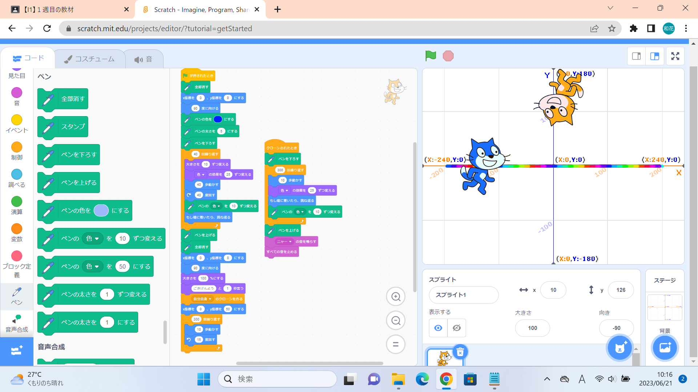

1-1 サイエンスアート

1.内容
スクラッチを使って線を書くプログラムを、クローンで増やした猫が左右に反復横跳びするような形で動きながら虹色の線を描くようにした。
私のサイエンスアートは前半後半の二つに分けられ、今説明したのは後半の内容である。前半は円を描きながらだんだんと大きくなる猫（色も変化しながら）が虹色の線を描くプログラムである。
2.感想
このコードを入れるとどうなるんだろうと考えながらいろんなコードを試すのがとても面白かった。いろいろ試してみた結果とてもごちゃごちゃしたものになってしまったが、
私の中では結構気に入った。猫のいる場所が座標で表示されているのを見て、自由に動き回っているように見えても座標の上を動いてるんだよな、と改めて実感した。